init_spec <- rjd3x13::spec_x13("RSA5c")
new_spec <- set_benchmarking(init_spec,
enabled = TRUE,
target = "Normal",
rho = 0.8,
lambda = 0.5,
forecast = FALSE,
bias = "None")Benchmarking and temporal disagreggation
In this chapter
The sections below provide guidance on how to implement algorithms on
Benchmarking of seasonally adjusted data
Benchmarking high to low frequency data
Using the GUI with a plug-in or rjd3bench package package.
Algorithms overview
Benchmarking
| Method | GUI Plug-in for V 2.x | GUI Plug-in for V 3.x | In R rjd3bench |
|---|---|---|---|
| Denton | ✔ | ✔ | ✔ |
| Cholette | ✔ | ✔ | ✔ |
| Cholette Multi-variate | ✔ | ✖ | ✔ |
| Cubic Splines | ✖ | ✔ | ✔ |
| GRP (Growth Rate Preservation) | ✖ | ✔ | ✔ |
| Calendarization | ✔ | ✖ | ✔ |
Temporal Disaggregation
| Method | GUI Plug-in for V 2.x | GUI Plug-in for V 3.x | In R rjd3bench |
|---|---|---|---|
| Regression Models* | ✔️ | ✔️ | ✔ |
| Model-based Denton | ✖ | ✔ | ✔ |
| ADL (Autoregressive Distributed Lag Models) | ✖ | ✖ | ✔ |
*Regression models: several structures of residuals
Ar1: Chow-Lin
Rw: Fernandez
RwAr1: Litterman
Benchmarking seasonally adjusted data
The goal here is to enforce identical annual totals on the seasonally adjusted series as on the raw or calendar adjusted series.
Using the GUI
When running a seasonal adjustment process
With the pre-defined specifications the benchmarking functionality is not applied by default following the ESS Guidelines on Seasonal Adjustment (2024) recommendations. It means that once the user has seasonally adjusted the series with a pre-defined specification the Benchmarking node is empty. To execute benchmarking click on the Specifications button and activate the checkbox in the Benchmarking section.

Three parameters can be set here. Target specifies the target variable for the benchmarking procedure. It can be either the Original (the raw time series) or the Calendar Adjusted (the time series adjusted for calendar effects). Rho is a value of the AR(1) parameter (set between 0 and 1). By default it is set to 1. Finally, Lambda is a parameter that relates to the weights in the regression equation. It is typically equal to 0 (for an additive decomposition), 0.5 (for a proportional decomposition) or 1 (for a multiplicative decomposition). The default value is 1.
To launch the benchmarking procedure click on the Apply button. The results are displayed in four panels. The top-left one compares the original output from the seasonal adjustment procedure with the result from applying a benchmarking to the seasonal adjustment. The bottom-left panel highlights the differences between these two results. The outcomes are also presented in a table in the top-right panel. The relevant statistics concerning relative differences are presented in the bottom-right panel.

Both pictures and the table can be copied the usual way (see the Simple seasonal adjustment of a single time series scenario).

To export the result of the benchmarking procedure (benchmarking.result) and the target data (benchmarking.target) one needs to once execute the seasonal adjustment with benchmarking

Expand the “+” menu and choose an appropriate data format (here Excel has been chosen). It is possible to save the results in TXT, XLS, CSV, and CSV matrix formats. Note that the available content of the output depends on the output type.

Chose the output items that refer to the results from the benchmarking procedure, move them to the window on the right and click OK.

In R with rjd3x13 and rjd3tramoseats
When performing seasonal adjustment with rjd3x13 and rjd3tramoseats, the current (or default) specification has to be customized using the function rjd3toolkit::set_benchmarking documented on this GitHub page
More information on R packages for JDemetra+ and installation procedures is provided in this chapter
Benchmarking with different frequencies
These methods provide a high-frequency series (input series) modified so that it fulfils a linear relationship, with another series of low frequency (benchmark), both series measure the same target variable. An example of the relation to be fulfilled could be that the low frequency series (quarterly frequency) coincides with the quarterly sum of the high frequency series (monthly frequency).
Multivariate benchmarking also forces contemporary linear relations between high frequency series. If these relations do not exist, benchmarking could be carried out for each series separately. Normally contemporary relations are linear and the relations of aggregation are also linear and the same for all series, so the contemporary relations between low frequency series are fulfilled.
The benchmarking methods available in the benchmarking and time disaggregation plug-in are: Denton, Cholette, and Cholette multivariate.
Using the plug-in for GUI (version 2.x)
Download the plug-in for GUI as explained here and install it as detailed here
Once the plugin is installed, two more options appear in the Workspace window: Benchmarking and Temporal Disaggregation.

Univariate: Denton and Cholette
To run Denton univariate case select:
Statistical Methods \(\rightarrow\) Benchmarking \(\rightarrow\) Denton or Cholette
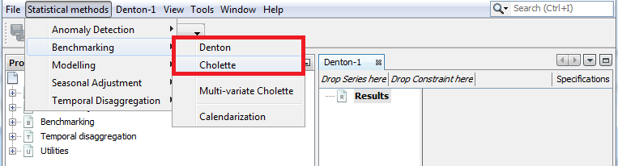
In both cases, a new window is displayed to launch one of the methods with the series selected. In the upper left side, drag the high frequency series from the Providers window and drop it in Drop Series here and the low frequency series in Drop Constraint here.
Denton
In the top right of the screen, select the Specifications button to set the specifications to apply each method. See below for a description of the available options on Denton method:
Type: Aggregation function (Sum, Average, Last or First). This forces the low-frequency series to match the aggregation function selected of the high frequency series.
Multiplicative: if the checkbox is selected, the proportional Denton method is applied. Otherwise, additive Denton is applied.
Modified Denton: if the checkbox is selected, the modified Denton method is applied. Otherwise, original Denton is applied. It is recommended to select it; as original Denton perform a special treatment on the first observation.
Differencing: Number of regular differences. By default 1.
Default frequency: periodicity of the low frequency data. The options are: Yearly, HalfYearly, QuadriMonthly, Quarterly, Bimonthly and Monthly.

Cholette
See below for a description of the available options on Cholette method:
Type: Aggregation function (Sum, Average, Last or First). This forces the low-frequency series to match the aggregation function selected of the high frequency series.
Aggregation frequency: periodicity of the low frequency data. The options are: Yearly, HalfYearly, QuadriMonthly, Quarterly, Bimonthly and Monthly.
Rho: value between \(-1\) and \(1\). It is the coefficient of an AR(\(1\)) model that follows the error term. The default value is \(1\), equivalent to applying Denton.
Lambda: value between \(0\) and \(1\). It is the parameter \(\lambda\) of the following function to be minimized in Cholette method:
\[ \sum_t \left( \frac{x_t - z_t}{\left| z_t \right|^{\lambda}} - \rho \frac{x_{t-1} - z_{t-1}}{\left| z_{t-1} \right|^{\lambda}}\right)^2 \]
Usually lambda is \(0\) or \(1\) equivalent to applying additive benchmarking and proportional benchmarking method respectively.

In both cases, Denton and Cholette methods, the output is a graph with the original series and the benchmarked series. There is no table with the results, but it is very easy to create one from the graph. Select the graph and select copy, then paste the values in excel (control-V).
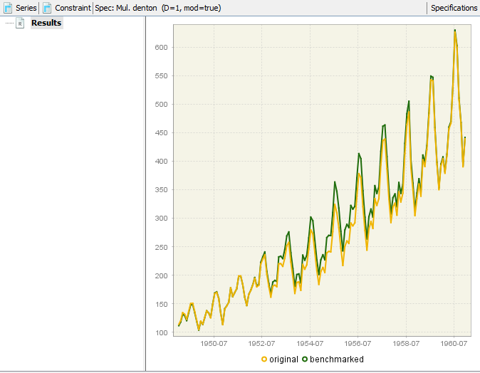
Multi-variate Cholette
The only multi-variate benchmarking method available for the version 2 plugin, is multi-variate Cholette.
The input for this method are a set of time series with different frequencies and a set of constraints, both contemporary and intertemporal. The output is a new set of time series, that corresponds to the former, now fulfilling the constraints.
To run multi-variate Cholette select Statistical methods \(\rightarrow\) Benchmarking \(\rightarrow\) Multi-variate Cholette. Then, a box appears, where we can drop time series.
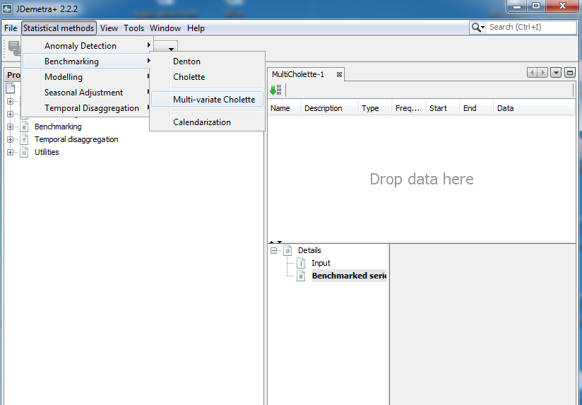
The specification properties can be set by selecting Window \(\rightarrow\) Properties. There are only three elements in the form: Rho, Lambda and Constraints. The two first are analogous to their univariate Cholette counterparts. The third one allows to set constraints, both contemporary and intertemporal.
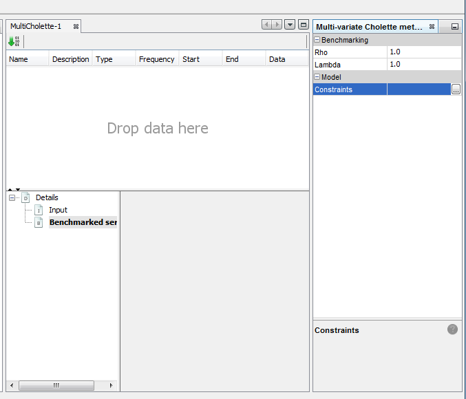
Clicking the three dots button from Constraints, opens the constraints list box.
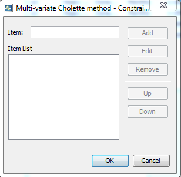
From this box, the set of constraints can be added, just typing the constraint inside item and clicking Add button. The constraints must be written as follows:
- \(y = a_1 * x_1 + \dots + a_n * x_n\) where \(y, x_1, \dots, x_n\) are same frequency time series and \(a_1, \dots, a_n\) are constant.
- \(c = a_1 * x_1 + \dots + a_n * x_n\) where \(x_1, \dots, x_n\) are same frequency time series and \(c, a_1, \dots, a_n\) are constant.
- \(c = x_1 + \dots + x_n\) can be shortened as \(c = x?\).
- \(S = \mathrm{sum}(s)\) where \(S\) is low-frequency and \(s\) is high-frequency.
Note that any time series put on the left hand side can’t appear on the right hand side of any other constraint. This is because left hand side quantities are fixed while right hand side quantities are adjusted so the equality holds.
The output are the benchmarked high-frequency time series, that can be found in Details \(\rightarrow\) Benchmarked series.
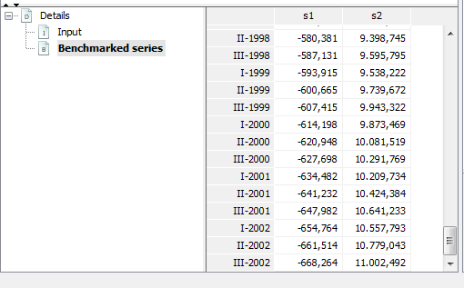
Using the plug-in for GUI (version 3.x)
Practical use of the plug-in for v 3.x is quasi identical to the one in v2.x described above. Some methods are not available yet in v 3.x but the latter which contains Model
Based Denton not included in v2.x, as stated here
In R with rjd3bench
Use the [rjd3bench](https://github.com/rjdverse/rjd3bench) package and see its documentation pages. Browse its documentation on this GitHub page.
To get started browse the vignette
More information on R packages for JDemetra+ and installation procedures is provided in this chapter
Temporal Disaggregation
These methods are used to disaggregate a series from low frequency to high frequency. Temporal disaggregation methods developed in the plug-in are Chow-Lin, Fernández and Litterman.
When there are high frequency related indicators, these methods provide high frequency estimations for a series whose sums, averages, first or last values are consistent with the observed low frequency series, applying a regression model where it is assumed that the high frequency series to be estimated follows a multiple regression with p related series (indicators).
See Methods\(\rightarrow\)Temporal disaggregation for more theoretical detail.
Using the plug-in for GUI
Temporal disaggregation in the GUI is available with the same plug-in as benchmarking (described in the sections above)
To run Temporal Disaggregation methods select Temporal disaggregation\(\rightarrow\) Regression Model:
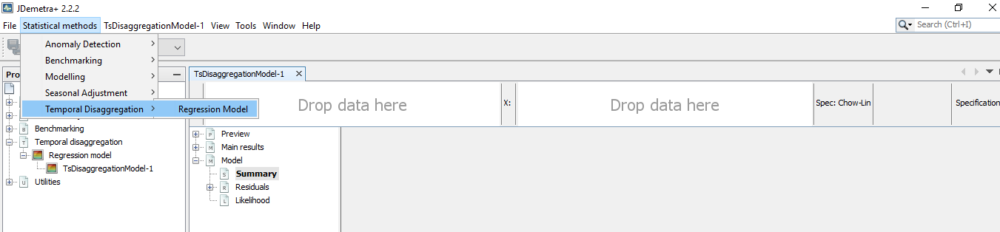
A new window is displayed to launch one of the methods with the series selected. In the upper left side drag the low frequency series from the Providers window and drop it in Y box and the proxy series or indicator with high frequency series in X box.

In the top right of the screen, select Specifications to set the specifications to apply each method. Here is a description of the available options on Temporal Disaggregation methods:
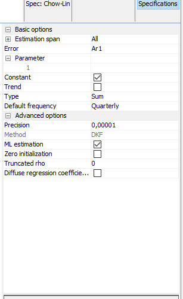
- Estimation span: Specifies the span (data interval) of the time series to be used in the temporal disaggregation process. The user can restrict the span. The common settings are:
| Option | Description (expected format) | |
|---|---|---|
| All | default | |
| From | first observation included (yyyy-mm-dd) | |
| To | last observation included (yyyy-mm-dd) | |
| Between | interval [from ; to] included (yyyy-mm-dd to yyyy-mm-dd) | |
| First | number of observtions from the beginning of the series included (dynamic) (integer) | |
| Last | number of observations from the end of the series (dynamic)(integer) | |
| Excluding | excluding N first observation and P last observation from the computation,dynamic) (integer) | |
| Preliminary check | check to exclude highly problematic series e.g. the series with a number of identical observations and/or missing values above pre-specified threshold values. (True/False) |
- Error: determines the method to be applied and it refers to the model that follows the error term.
| Option | Description |
|---|---|
| Ar1 | Chow-Lin method (default) |
| Wn | Classical Regression model |
| Rw | Fernández |
| RwAr1 | Litterman |
| I2 | Integrated order 2 |
| I3 | Integrated order 3 |
Parameter: Coefficient of the AR(1) of the innovations model. It has a value between -1 and 1. This parameter exists only if RWar1 or Ar1 is selected in the error parameter.
Constant: a constant is included in the model if it is selected.
Trend: a linear trend is included in the model if it is selected.
Type: Aggregation function (Sum, Average, Last or First). This forces the low-frequency series to match the aggregation function selected of the high frequency series.
Default frequency: it is the frequency of the output series.
Advanced options: These parameters are related to state space model and the algorithm used to obtain the estimations.
8.1. Diffuse regression coefficient: Indicates if the coefficients of the regression model are diffuse (T) or fixed unknown (F, default).
Here are the results:
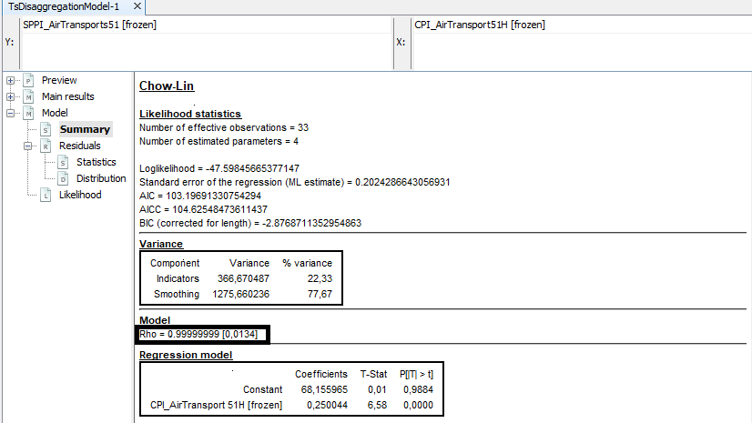
Select Model\(\rightarrow\)Summary to see the estimation of \(rho\) (coefficient of the AR(1) model) and the coefficient of the regression model. Additionally the BIC, AIC and AICC. It is also showed the variance decomposition in Indicators and Smoothing. Ideally, if the indicator adequately approximates the aggregate in the observable domain (low frequency model), the residuals of the low frequency model will be small and the indicator term will dominate. \
To confirm that the model works well, select Model\(\rightarrow\)Residuals\(\rightarrow\)Statistics and see the tests on the residuals of the model:
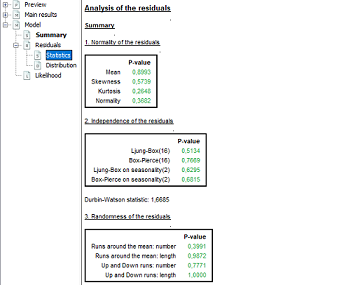
Select MainResults\(\rightarrow\)Table to obtain the disaggregated series and standard deviation.
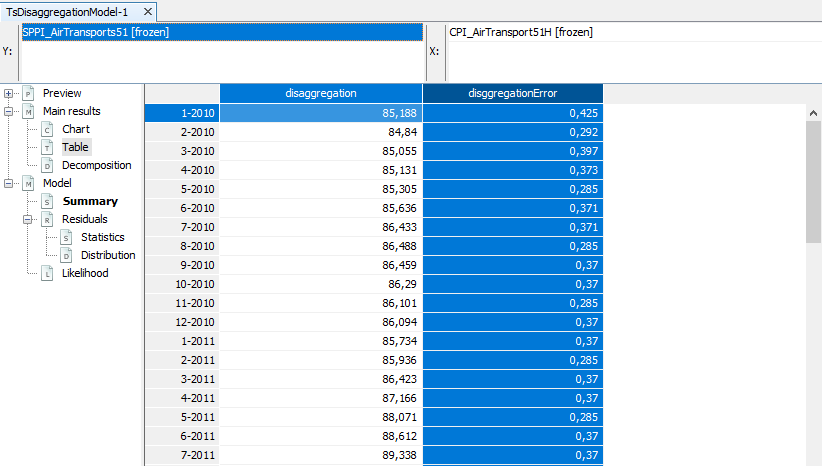
Select MainResults\(\rightarrow\)Chart to see a graph of the disaggregated series and the confidence interval.
In R with rjd3bench
Use the [rjd3bench](https://github.com/rjdverse/rjd3bench) package and see its documentation pages. Browse its documentation on this GitHub page.
To get started browse the vignette
More information on R packages for JDemetra+ and installation procedures is provided in this chapter
Temporal Disaggregation
To perform Temporal Disaggregation methods use the function temporaldisaggregation:
output <- rjd3bench::temporaldisaggregation(
series = y, indicators = x, model = "Rw", freq = 12,
conversion = "Average", diffuse.algorithm = "Diffuse"
)The input parameters are the same as in the GUI, see the R Documentation of the rjd3bench package for the description.
The output is a list containing 3 elements:
Regression: contains information about:
- Type of method applied:
output$regression$type- The model (coefficient estimation, standard deviation and T-statistic):
output$regression$model- Conversion:Aggregation function (Sum, Average, Last or First):
output$regression$conversionEstimation: contains information about:
- The disaggregated series:
output$estimation$disagg- The standard deviation of the disaggregated series:
output$estimation$edisagg- The regressor effect:
output$estimation$regeffect- The smoothing part:
output$estimation$smoothingpart- The \(rho\) estimation (coefficient of the AR(1) model): This parameter exists only if RWar1 or Ar1 is selected in the model.
output$estimation$parameter- The standard deviation of the AR(1) coefficient:
output$estimation$eparameterLikelihood: Contains information about the loglikelihood(ll), sum of squares of the residuals of the model (ssq), number of observations (nobs), number of parameters to be estimated (nparams), degrees of freedom (df), Akaike Information Criteria (aic), Akaike Information Criteria Corrected (aicc), Bayesian Information Criteria (bic), Bayesian Information Criteria Corrected (bic2).